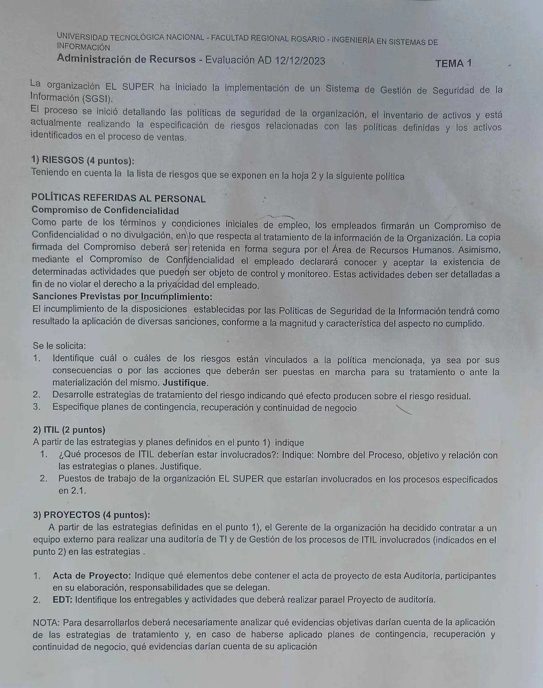

Aprobación directa, 12/12/2023, tema 1
Aprobación directa, 12/12/2023
Enunciado


Propuesta de respuesta
Respuesta no verificada. La propuso Luta Studios con inteligencia artificial y ningún docente la revisó. Puede tener errores.
1. Riesgos
1.1. Riesgos vinculados a la política de Compromiso de Confidencialidad. Los riesgos son los seis de la hoja 2.
| Riesgo | ¿Vinculado? | Justificación |
|---|---|---|
| 5. Falla de cifrado de los datos de tarjetas y personal de sistemas con acceso a producción y a los backups, que permite que un empleado use esa información para su beneficio | Sí, el principal | Por sus consecuencias. Es justo lo que la política busca evitar, un empleado que divulga o usa información de la organización. Por las acciones. El compromiso firmado, el aviso de que ciertas actividades se controlan y monitorean, y las sanciones son parte del tratamiento y de lo que se hace cuando se materializa |
| 6. Phishing de una persona externa que obtiene datos de clientes y registra compras | Sí, por las acciones | Si el engaño llega a través de un empleado, el compromiso de confidencialidad y la concientización del personal (6.03) son parte del tratamiento, y las sanciones se aplican si un empleado entregó datos sin cuidado |
| 1, 2, 3 y 4 | No | Son fallas técnicas o de procesos (componente desactualizado, actualizaciones, cambios, réplicas). La causa no es una acción del personal sobre la información, así que la política no las trata |
1.2. Estrategias y efecto sobre el residual. Para el riesgo 5, con un inherente de probabilidad 3 e impacto 5.
| Estrategia | Qué se hace | Efecto |
|---|---|---|
| Evitar | No guardar los datos de las tarjetas en los sistemas propios y trabajar con el código que devuelve el procesador de pagos | Si no hay datos de tarjetas, el riesgo desaparece. Si no se puede, se aplican las otras |
| Transferir | Delegar el resguardo de los datos de tarjetas en el procesador de pagos, con contrato (UC), y contratar un seguro contra fraude | Baja el impacto económico |
| Mitigar | Cifrar los datos de tarjetas en la base y en los backups, dar acceso solo a quien lo necesita (5.15), registrar y revisar cada acceso a esos datos (8.15 y 8.16), que todos firmen el compromiso y lo guarde RRHH en forma segura, y concientizar al personal (6.03) | Baja la probabilidad, porque los datos no se pueden leer y el empleado sabe que lo controlan, y baja el impacto, porque el uso indebido se detecta rápido |
Riesgo residual, con la misma especificación, probabilidad 1 e impacto 4.
Para el riesgo 6, mitigar con concientización a empleados y clientes sobre el phishing (6.03), autenticación de dos factores para las compras y monitoreo de compras fuera de lo habitual. Baja la probabilidad.
1.3. Planes, para el riesgo 5.
| Plan | Actividades |
|---|---|
| Contingencia | Quitar los accesos del empleado involucrado, pedir al procesador el bloqueo de las tarjetas afectadas, preservar los registros como evidencia (5.28) y registrar el incidente |
| Continuidad | Reasignar sus tareas a otro integrante del área y seguir vendiendo con tarjetas a través del procesador |
| Recuperación | Cifrar los datos que faltaban y cambiar las claves de acceso, auditar todos los accesos del período, avisar a los clientes afectados, aplicar las sanciones previstas por la política junto con RRHH y cerrar con un PIR |
2. ITIL
2.1. Procesos involucrados
| Proceso | Objetivo | Relación con las estrategias o planes |
|---|---|---|
| Gestión de Solicitudes | Tramitar y aprobar los pedidos de acceso | Los accesos a los datos de tarjetas se dan solo por solicitud aprobada. Es la estrategia de acceso mínimo |
| Gestión de Eventos | Detectar los cambios de estado que importan, como accesos fuera de lo normal | El acceso fuera de horario o masivo es un evento de advertencia (estrategias) o de excepción (contingencia) |
| Gestión de Incidentes | Contener lo antes posible el uso indebido | La detección es el disparador, y quitar accesos y bloquear tarjetas es la contingencia |
| Gestión de Problemas | Encontrar la causa, como datos sin cifrar o permisos de más | Termina en el RFC que cifra los datos o ajusta los permisos, parte de la recuperación |
| Control de Cambios | Que el cifrado y los cambios de permisos estén aprobados y probados | Implementa la mitigación y la recuperación |
| Configuración y Activos | Saber qué CI guardan datos de tarjetas y quién tiene acceso | Da el inventario para revisar accesos y para la auditoría |
2.2. Puestos de El Super involucrados. Responsable de Seguridad Informática, administrador de base de datos (DBA), administrador de seguridad, analista de la mesa de ayuda, Gestor de Cambios, Gerente de Sistemas y Jefe de Recursos Humanos, que guarda los compromisos firmados y aplica las sanciones.
3. Proyectos
3.1. Acta de proyecto de la auditoría
| Elemento | Contenido |
|---|---|
| Nombre del proyecto | Auditoría de TI y de los procesos de ITIL del tratamiento de la información confidencial |
| De quién | Patrocinador, el Gerente de la organización, que decidió la auditoría y aporta los recursos |
| Para quién | Interesados, la Gerencia, Sistemas, Seguridad Informática, Recursos Humanos y Administración |
| Director del proyecto | El líder del equipo auditor externo, con la autoridad para usar recursos, pedir información y coordinar entrevistas |
| Objetivo | Evaluar, en un plazo de 8 semanas, si las estrategias de tratamiento y los planes del riesgo 5 se aplican y si los procesos de ITIL del punto 2 funcionan, con un informe de hallazgos y recomendaciones |
| Alcance preliminar | Entran los datos de tarjetas, los accesos del personal de sistemas, los backups, los compromisos de confidencialidad y los procesos del punto 2. Quedan fuera el resto de los sistemas |
| Entregables principales | Plan de auditoría, informe de relevamiento de controles, informe final |
| Plazo y presupuesto | Fecha de inicio y de fin, y costo total del equipo externo |
| Supuestos y restricciones | Acceso de solo lectura a la información, y el equipo externo firma un compromiso de confidencialidad |
| Aprobación | Firma del patrocinador |
Participantes en su elaboración. El Gerente (patrocinador), el director del proyecto del equipo externo, el Gerente de Sistemas, el Responsable de Seguridad Informática y el Jefe de Recursos Humanos.
Responsabilidades que se delegan. Al director del proyecto, la autoridad para aplicar los recursos y conducir la auditoría. Al Responsable de Seguridad Informática, dar y controlar los accesos del equipo auditor. A los dueños de cada proceso, entregar las evidencias pedidas. A RRHH, poner a disposición los compromisos firmados.
3.2. EDT
| Entregable | Actividades |
|---|---|
| 1. Gestión del proyecto | Acta, plan, reuniones e informes de avance |
| 2. Plan de auditoría | Objetivo y alcance, criterios (controles de ISO 27002), cronograma, técnicas y herramientas |
| 3. Relevamiento de controles | Entrevistas a Sistemas, Seguridad y RRHH. Inventario de controles, cada uno clasificado como preventivo, detectivo o correctivo |
| 4. Evaluación de las estrategias | Verificar el cifrado en la base y en los backups, revisar los permisos de acceso, revisar los registros de acceso a datos de tarjetas y controlar que cada empleado tenga su compromiso firmado y guardado en forma segura |
| 5. Evaluación de los planes | Revisar los incidentes registrados y si se ejecutaron la contingencia, la continuidad y la recuperación |
| 6. Evaluación de los procesos de ITIL | Revisar tickets de solicitudes de acceso, de incidentes y de eventos, RFC aprobados y la CMDB |
| 7. Informe final | Hallazgos, recomendaciones y presentación a la Gerencia |
Evidencias objetivas, como pide la nota.
| Para | Evidencias |
|---|---|
| Las estrategias | Compromisos firmados y su registro de guarda, configuración del cifrado en la base y en los backups, listado de permisos aprobados por solicitud, logs de acceso a datos de tarjetas y sus revisiones, registros de las capacitaciones |
| Los planes | Tickets del incidente con sus tiempos, registro de bajas de accesos, pedidos de bloqueo al procesador, evidencias preservadas, RFC del cambio de claves, actas de sanción y el PIR |
Respuesta no verificada. Puede tener errores.
Se armó con 1° parcial (especificación, SEI, estrategias, controles de ISO 27002, evidencias objetivas y planes), 2° parcial (prácticas de ITIL), Integración y alcance del 3° parcial (acta y EDT) y la página de Aprobación directa, que pide vincular por consecuencias o por acciones.
Quedó en duda: La hoja dice «Administración de Recursos» en el encabezado, aunque está en la carpeta de esta materia. La auditoría no tiene apunte vigente en la materia, así que el plan y la EDT siguen la clasificación de controles y las evidencias objetivas del 1° parcial. El organigrama de El Super no está en la materia, y los puestos son supuestos, salvo Recursos Humanos, que nombra la política. El riesgo 6 queda vinculado solo si el phishing llega a través del personal. Si la comisión lo lee como un engaño directo al cliente, el vínculo con esta política es débil. Los valores de probabilidad e impacto son una propuesta.
¿Cómo te fue?
Marcá cada tema del examen.
- RiesgosRiesgos, en Final
- ITILITIL, en Final
- Acta de proyectoQué es un proyecto, en 3° parcial
- EDTActa y EDT, en Aprobación directa